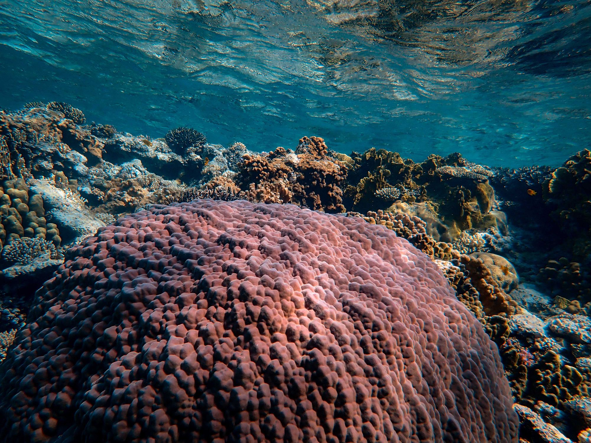
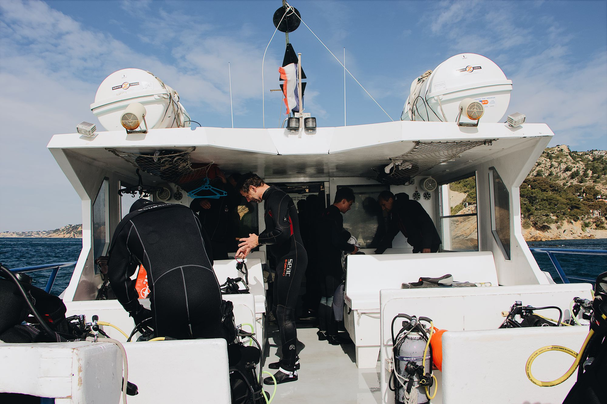

01
Mærk efter
En rolig introduktionssamtale om motivation, helbred, tid og forventninger.

Fra Nordsjælland til Rødehavet
Et overskueligt dykkerforløb for voksne, der vil lære sikkert – og afslutte med en uge under overfladen i Rødehavet.
Et andet slags frirum
Under vandet forsvinder notifikationer, møder og næste punkt på listen. Tilbage er åndedrættet, vægtløsheden og den opmærksomhed, som hverdagen sjældent giver plads til.
“Jeg glemmer alt om hverdagen under vandet.”
Fra nysgerrig til certificeret
En rolig introduktionssamtale om motivation, helbred, tid og forventninger.
Teori, pool og åbent vand i et lille hold med tydelig progression.
Certificeringen ender med en fælles uge ved Rødehavet – uden præstationsshow.

Rødehavet
I klart, varmt vand omsættes undervisningen til erfaring. Holdet rejser med en fælles faglig base, men oplevelsen føles større end et kursusbevis.
Oplev destinationen
Fællesskabet
Små hold giver plads til spørgsmål, tryghed og relationer. Ingen behøver ligne en eventyrer på forhånd.
Klar til første skridt?
Begynd med 25 uforpligtende minutter. Vi taler om, hvad der skal til, og om forløbet passer til dig.
Book introduktionssamtaleSamtalen er gratis og uden binding.